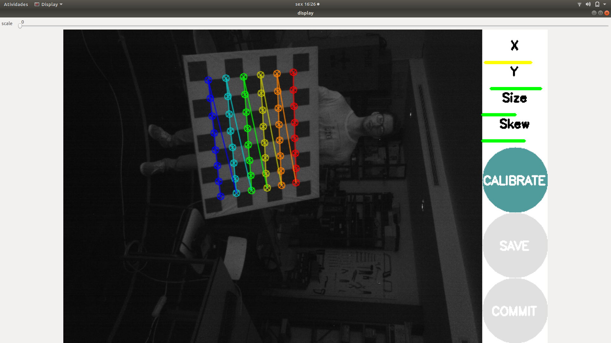

Durante esta semana, foram concluídos os capítulos 3 e 4 da dissertação, bem como algumas correções necessárias aos cap 1 e 2.
Após algumas alterações, o processo global de bin-picking foi realizado com êxito, como se pode visualizar na seguinte demonstração:
Para tornar a tele-operação mais confortável para o utilizador, tentou-se criar uma interface em rqt, de modo a colocar 2 janelas Rviz paralelas. Contudo, esta operação não foi possível devido a bugs existentes no upload de ficheiros de configuração para cada Rviz. Desta forma, quando o sistema inicia, serão lançadas 2 janelas Rviz e colocadas em paralelo no ecrã, de modo ao utilizador ter a perceção do mapa global de navegação, bem como aos pormenores inerentes ao bin-picking. Esta interface foi melhorada, e à medida que o processo de bin-picking avança, serão apresentadas informações ao utilizador na própria janela Rviz. Apresenta-se alguns exemplos nas seguintes imagens:
Iniciou-se a calibração total do sistema: Primeiro, constatou-se que a tf tree (quando o processo total é executado) era na verdade duas tf tree’s, ou seja havia falta de transformações de modo a conectar os referenciais existentes. A resolução deste problema, consistiu na calibração do laser frontal com o manipulador. Uma vez que o laser presente na ponta do manipulador tem alguns graus de liberdade, realizou-se a sua calibração face ao end effector. Para perceção de ângulos de rotação, colocou-se o laser perpendicular à bancada, e com um movimento do manipulador linear em Z , mediu-se o desfasamento face ao ponto inicial. Para a perceção das translações segundo os eixos X e Y colocou-se uma caneta na ponta do manipulador, como se pode ver na seguinte figura:
Posto isto, uma vez que o processo de Bin-Picking tem alguns erros associados, inciou-se a calibração da kinect. Realizou-se inicialmente algumas calibrações extrínsecas das quais não apresentaram bons resultados. Uma vez que a deteção do aruco necessária à calibração extrínseca apresentava algum erro, achou-se por bem, realizar também a calibração intrínseca de ambas as camaras (stereo e monocular) . Estas calibrações necessitam de ser repetidas com mais cuidado, visto que o problema não foi resolvido. Apresenta-se uma imagem do processo de calibração intrínseca:

Durante esta semana, realizou-se também a instalação do ubuntu 18.04 e do ROS melodic no mini-Pc, bem como os packages desenvolvidos e necessários ao ROBONUC. Desta forma, será necessário, na próxima semana, testar a sua performance .